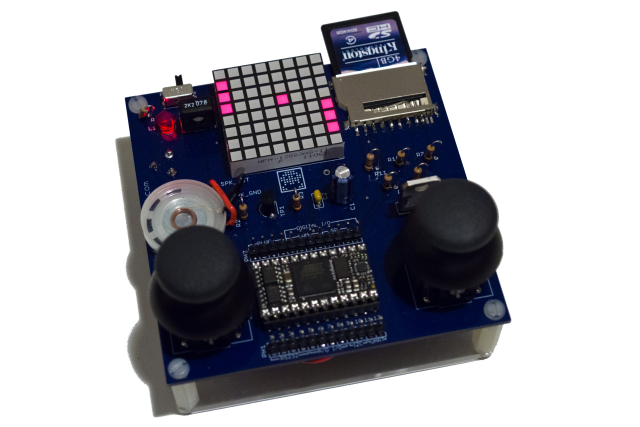

The PIX-6T4 Game Console

Buy a PIX-6T4 kit and...
- Build your own Video Game Console
- Join the Maker Revolution
- Use your console as a Turn-Key development board
- Discover the power of Netduino by 'Secret Labs'!
- Learn C# Programming
- Have fun building your own Games
The goal of the PIX-6T4 and its supporting companion book is to teach you how to use 'Electronic and Software Building Blocks' to become a Skilled Maker and, optionally, a Mad Scientist ;-)
To achieve this, we'll break down for you the process that we followed when we set out to build a simple video game console from readily available parts. Why a video game console? Because they're fun!... because a game console touches on many fundamental electronic concepts. In addition, a game console offers countless possibilities for learning how to write software: dream up a game and build it yourself by following our examples and techniques.
We chose the Netduino over other types of microcontrollers simply because the programming skills that you will learn on the .Net Micro Framework, as you discover the Netduino, will also be applicable to the full-featured .Net Framework used to build professional applications, large scale web services, mobile applications running on phones and web applications. Our hope is to empower you with life skills that can help you build a career or just build anything you can think of.
Last but not least, the Netduino community and the .Net Micro Framework embrace the open-source / open-hardware philosophy and whether you're a Mac or Linux user, the .Net Micro Framework is very relevant to you, thanks to the Mono Framework and its suite of development tools.